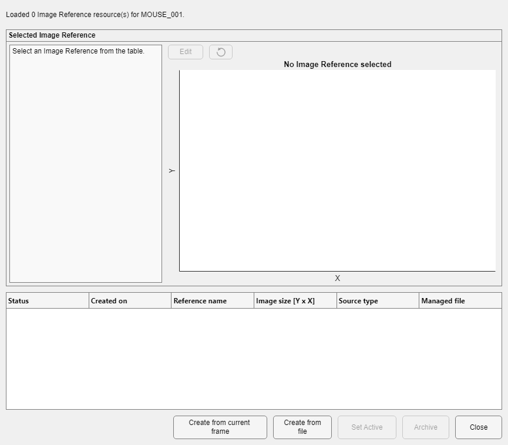

An image reference is a subject-owned fixed image used to align sessions consistently.
Load image data and choose Utilities > Image Reference. The Save Folder must have a resolvable project, subject, and session binding. Read-only projects may view references, but creating, editing, activating, archiving, or restoring requires writable project access.
DataViewer passes the project store, subject and session, current 2-D frame, source frame number, source type, and source provenance.

| Control | Purpose and persistence |
|---|---|
| Reference table | Lists active or archived resources, creation time, name, image size, source type, and managed file. |
| Preview and metadata | Shows the selected image and its provenance; read-only until Edit. |
| Create from current frame | Captures the frame received from DataViewer, prompts for description/notes, imports a managed subject resource, and can make it active. |
| Create from file | Imports a supported 2-D image source as a managed resource. |
| Edit / Apply | Adjusts reference framing after confirmation and creates the managed replacement required by store rules. |
| Set Active | Changes the subject's active reference pointer. |
| Archive / Restore | Archives without erasing history, or restores an archived resource. Archiving an active reference may require choosing a replacement. |
The manager changes centralized resources, not the displayed pixels. DataViewer retains its current image and resolves reference state again when a dependent tool is opened.
Identity and history
Managed resources are identified by UUID. Do not edit or replace their files directly; archive and restore them through the manager.